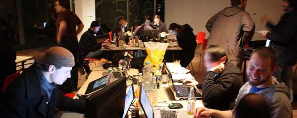

Global Game Jam Berlin 2014 @ Wooga
The Global Game Jam is an international hands-on Game Festival which takes place in over 300 cities world wide on just one weekend. The participants will produce experimental computer games which will be uploaded to the main GGJ website at the end of the weekend. From there everyone can download and play the games.
The Global Game Jam is a wonderful opportunity for participants to expand their horizons, challenge themselves, and meet new people. Right away you will start developing a playable game with strangers who share the same passion as you in just two days. At the end you are tired but happy.
The Global Game Jam Berlin is open to everyone who wants to create digital games, board games or physical games in 48 hours.
Information
Who
The Global Game Jam Berlin is open to everyone.
There is no special skillset required, all disciplines are welcome.
What
Any kind of game: digital, non-digital, physical...
Any kind of platform: desktop, web, mobile, pen-and-paper...
When
January 24, 2014 to January 26, 2014.
Starts on Friday at 5pm and ends on Sunday at 5pm.
Presentation starts on Sunday at 6pm.
Where
Wooga offices at Die Backfabrik, 5th floor. Saarbrücker Straße 38, 10405 Berlin.
Accommodation
The GGJ is a 48 hour event and will keep going overnight.
Unfortunately we cannot provide a place to sleep in the venue.
Ownership
The rights of the game that you make will be owned by you. It is required that you upload it to the Global Game Jam website and released under a Creative Commons License, both source code and assets, including permission for Global Game Jam to use your content for promotion purposes.
Registration
Registrations for the Berlin site will be open soon. The ticket price is 10€, including food and drinks.
In addition to that, you also need to register for this location in the Global Game Jam website
Schedule
The schedule for the event will be published soon.
Past editions

Global Game Jam 2013
The 2013 edition took place at Urban Spree between 25th and 27th of January.
The theme was the sound of a heartbeat.
Videos: [1] [2] [3]


Global Game Jam 2012
The 2012 edition took place at Computerspielemuseum between 27th and 29th of January.
The theme was an image of an Ouroboros (Link)
Videos: [1] [2] [3]



Global Game Jam 2011
The 2011 edition took place at .HBC Berlin between 28th and 30th of January.
The theme was "Extinction"


{kind=link}
{kind=link}